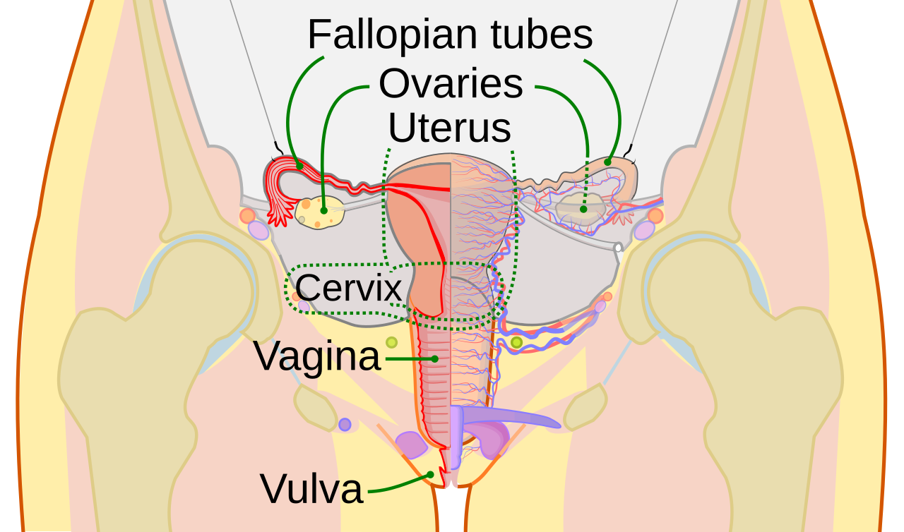

Chu kỳ được tính từ ngày đầu kỳ kinh này đến ngày đầu kỳ kế tiếp. Các pha phản ánh biến đổi buồng trứng và niêm mạc tử cung, nhưng chu kỳ không phải lúc nào cũng 28 ngày và ngày rụng trứng không cố định ở ngày 14.
Tình huống minh họa: Ứng dụng báo pha nang trứng nhưng bạn vẫn mệt sau nhiều đêm ngủ gián đoạn. Dự đoán pha không buộc cơ thể phải nhiều năng lượng. Ghi triệu chứng thực tế, xem các yếu tố cùng thay đổi và sử dụng lịch như thông tin hỗ trợ, thay vì coi đó là phán quyết về khả năng hoạt động trong ngày.
Hai chuỗi thay đổi diễn ra song song trong chu kỳ
Có thể nhìn chu kỳ qua buồng trứng và niêm mạc tử cung. Ở buồng trứng, nang trứng phát triển, có thể dẫn tới rụng trứng rồi hình thành hoàng thể. Ở tử cung, niêm mạc thay đổi dưới ảnh hưởng nội tiết và bong ra khi xuất hiện kỳ kinh. Cách chia bốn pha thường dùng trong ứng dụng là một cách trình bày dễ hiểu của những quá trình liên tục này, không phải bốn trạng thái luôn có ngày bắt đầu cố định.

FSH, LH, estrogen và progesterone tham gia điều hòa, nhưng một đường cong trong sách chỉ mô tả mô hình điển hình. Mức hormone và thời điểm chuyển pha khác nhau giữa các chu kỳ. Có chảy máu không tự xác nhận đã rụng trứng, và tính ngược theo lịch không biến ngày dự kiến thành một kết quả xét nghiệm.
Điều này đặc biệt quan trọng khi dùng tránh thai nội tiết, sau sinh hoặc trong tiền mãn kinh. Một lịch pha được thiết kế cho chu kỳ tự nhiên có thể không phù hợp. Dữ liệu nên giúp bạn mô tả trải nghiệm và chuẩn bị cho triệu chứng, thay vì áp đặt rằng một ngày nhất định phải nhiều năng lượng, ham muốn hoặc sức mạnh hơn. Khi chu kỳ thay đổi, cần cân nhắc nhiều nguyên nhân, gồm cả khả năng có thai nếu phù hợp.
Theo dấu FSH, estrogen, LH và progesterone
FSH từ tuyến yên góp phần hỗ trợ các nang phát triển; hoạt động của nang đi cùng sản xuất estrogen và thay đổi niêm mạc tử cung. Gần rụng trứng, hệ phản hồi nội tiết tạo đỉnh LH. Sau rụng trứng, phần nang còn lại hình thành hoàng thể và tạo progesterone, cùng estrogen, góp phần chuẩn bị niêm mạc.
Nếu không có thai, hoàng thể thoái triển, các tín hiệu hormone thay đổi và kỳ kinh có thể bắt đầu. Chuỗi mô tả này giúp hiểu thứ tự sự kiện, không xác định ngày theo lịch cho từng người. Nó cũng giải thích vì sao thuốc nội tiết có thể làm mối liên hệ giữa chảy máu và rụng trứng khác chu kỳ tự nhiên: không nên dùng biểu đồ chuẩn trong sách để đọc mọi hình thức chảy máu hoặc mọi phương pháp tránh thai. 1 4 2 5
BBT và nhiệt độ da trả lời những câu hỏi khác nhau
Nhiệt độ cơ bản là nhiệt độ khi cơ thể hoàn toàn nghỉ, thường được ghi ngay sau thức dậy trước hoạt động. Sau rụng trứng, thay đổi nội tiết có thể đi cùng một mức nhiệt cao hơn so với pha trước. Giá trị hữu ích nằm ở mẫu thay đổi của một chuỗi đo nhất quán, không phải một số nhiệt riêng lẻ.
Cảm biến trên nhẫn hoặc cổ tay thường ghi nhiệt độ da ban đêm hoặc độ lệch so với nền. Nhiệt độ da chịu thêm ảnh hưởng của môi trường, tuần hoàn ngoại vi và độ tiếp xúc. Vì vậy, không lấy ngưỡng của nhiệt kế miệng đặt thẳng lên biểu đồ độ lệch nhiệt da. Sốt, lịch ngủ khác thường và những yếu tố sinh hoạt khác cũng cần được ghi nhận.
Tín hiệu nhiệt thường có ích hơn trong việc gợi ý rụng trứng đã xảy ra, trong khi những ngày dễ thụ thai nhất có thể nằm trước lúc bạn thấy rõ sự tăng nhiệt. Cũng không có đường cong ba pha hay số ngày nhiệt cao nào đủ để tự xác nhận mang thai và tình trạng thai. Câu hỏi đó cần que thử phù hợp, rồi đánh giá y tế nếu có triệu chứng đáng lo. 2 6 7
Từ khác biệt sinh lý đến giáo án: khoảng cách cần thận trọng
Biến đổi hormone theo chu kỳ là có thật, nhưng điều đó không tự chứng minh một lịch tập theo pha tốt hơn cho tất cả. Cần phân biệt cơ chế có thể xảy ra, khác biệt đo được trong thí nghiệm và lợi ích của một giáo án dài hạn. Một quan sát về nhiệt độ hoặc chuyển hóa không đủ để kết luận phải giảm tạ hay tăng protein vào một tuần cố định.
Tổng quan McNulty và cộng sự ghi nhận ảnh hưởng trung bình nhỏ, mức chắc chắn bị hạn chế bởi chất lượng và khác biệt giữa các nghiên cứu. Tổng quan về tập kháng lực năm 2023 cũng nhấn mạnh sự thiếu nhất quán và vấn đề xác định pha. Như vậy, giữ được ý tưởng lắng nghe chu kỳ không cần đi kèm lời hứa tăng cơ tốt hơn nhờ canh ngày.
Ứng dụng thực tế là theo dõi triệu chứng, mức gắng sức và hiệu suất trong điều kiện có thể so sánh. Một mẫu riêng lặp lại qua vài chu kỳ có thể giúp sắp xếp buổi tập thuận tiện hơn. Nhưng nếu mẫu không rõ, bạn không cần tạo ra nó. Kỹ thuật, tăng tải hợp lý, ăn đủ và khả năng duy trì vẫn là nền tảng của chương trình. 8 9
Bảng đối chiếu để đọc đúng thông tin
| Quá trình | Mô tả khái quát | Giới hạn ứng dụng |
|---|---|---|
| Hành kinh | Xuất hiện chảy máu kinh | Không tự xác nhận chu kỳ trước đã rụng trứng |
| Phát triển nang | Hoạt động buồng trứng và nội tiết thay đổi | Không có ngày bắt đầu năng lượng cao chung |
| Rụng trứng | Một sự kiện sinh học có thể xảy ra | Lịch dự đoán không phải xét nghiệm xác nhận |
| Hoàng thể | Giai đoạn sau rụng trứng | Không buộc mọi người phải giảm tập |
Điểm cần giữ khi đọc kết quả nghiên cứu
Năng lượng và tâm trạng có thể thay đổi nhưng không giống nhau ở mọi người. Thuốc nội tiết, sau sinh và tiền mãn kinh làm việc suy đoán pha từ lịch kém đáng tin hơn. 1 2 3
Ứng dụng thực tế: làm gì và đánh giá bằng cách nào?
Ghi ngày bắt đầu, thời lượng, mức chảy máu và triệu chứng theo cách dễ duy trì. Dùng thông tin để chuẩn bị chăm sóc bản thân và trao đổi khi khám, không dùng lịch để quyết định năng lực mỗi ngày.
- Ghi điều ảnh hưởng cuộc sống. Thời điểm, đau, chảy máu, giấc ngủ hoặc mức khó chịu cụ thể giúp làm rõ câu hỏi.
- Ghi những thay đổi liên quan. Thuốc, tránh thai, lịch sống, khả năng mang thai và giai đoạn sau sinh có thể đổi cách diễn giải.
- Chọn hỗ trợ theo mục tiêu. Có thai, tránh thai, giảm đau và điều chỉnh tập là những mục tiêu khác nhau; không dùng một biểu đồ thay cho mọi quyết định.
- Chuẩn bị trao đổi khi cần. Mang diễn biến và điều đã thử, hỏi rõ lựa chọn cùng kế hoạch theo dõi thay vì tự mua một bộ xét nghiệm hoặc phác đồ bổ sung.
Khi nào nên tìm hỗ trợ?
Năng lượng và tâm trạng có thể thay đổi nhưng không giống nhau ở mọi người. Thuốc nội tiết, sau sinh và tiền mãn kinh làm việc suy đoán pha từ lịch kém đáng tin hơn.
Chảy máu giữa kỳ, sau quan hệ, sau mãn kinh hoặc mất kinh nhiều kỳ cần được kiểm tra.
Nguồn tham khảo và phạm vi hỗ trợ
-
NHS — Periods — Public health guidance. Hỗ trợ: Chu kỳ, triệu chứng và chảy máu bất thường.
-
ACOG — Fertility Awareness-Based Methods of Family Planning — Professional patient guidance. Hỗ trợ: Chất nhầy, BBT, thời điểm sinh sản và giới hạn tránh thai.
-
NHS — Missed or late periods — Public health guidance. Hỗ trợ: Nguyên nhân trễ kinh và thời điểm đi khám.
-
Endocrine Society — Reproductive Hormones — Professional patient guidance. Hỗ trợ: Vai trò các hormone sinh sản và xét nghiệm phù hợp.
-
OpenStax Biology 2e — Hormonal Control of Human Reproduction — Physiology textbook. Hỗ trợ: FSH, LH, hormone buồng trứng và trình tự sinh lý chu kỳ.
-
NHS — Doing a pregnancy test — Public health guidance. Hỗ trợ: Thời điểm thử thai và xử trí kết quả âm tính sớm.
-
NHS — Ectopic pregnancy: symptoms — Public health guidance. Hỗ trợ: Đau bụng, chảy máu, đau vai và chăm sóc khẩn.
-
McNulty et al. (2020) — The Effects of Menstrual Cycle Phase on Exercise Performance in Eumenorrheic Women — Systematic review and meta-analysis. Hỗ trợ: Hiệu ứng trung bình nhỏ, chất lượng bằng chứng thấp; cần cá nhân hóa.
-
Colenso-Semple et al. (2023) — Current evidence shows no influence of women's menstrual cycle phase on acute strength performance or adaptations to resistance exercise training — Umbrella review. Hỗ trợ: Chưa đủ cơ sở kê lịch tập sức mạnh cố định theo pha.
Cập nhật nội dung và nguồn: 26/10/2026. Nội dung giáo dục; chưa có xác nhận duyệt bởi bác sĩ.